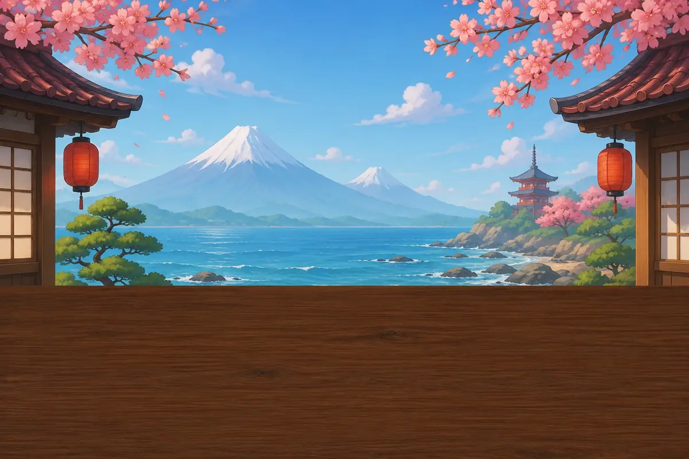
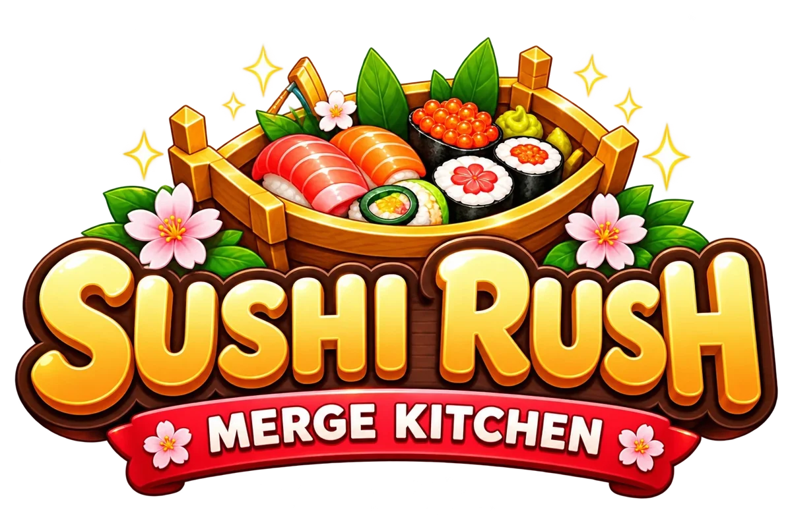

BrowserPrzeglądarka
Sushi Rush: Merge Kitchen
Merge matching dishes, serve customers before they lose patience and open sushi bars from Tokyo to Osaka. 76 levels, no energy timers.
Łącz takie same dania, obsługuj klientów, zanim stracą cierpliwość, i otwieraj bary sushi od Tokio po Osakę. 76 poziomów, bez liczników energii.
CasualCasualMergeRelaxingRelaks